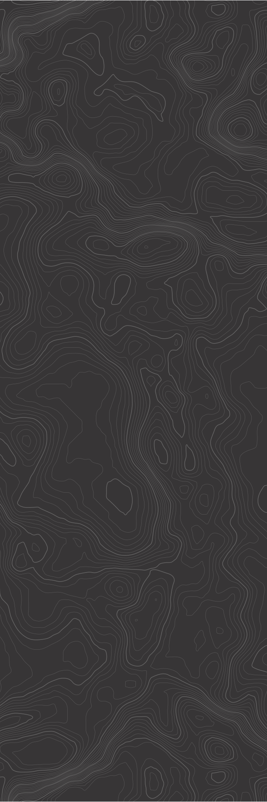
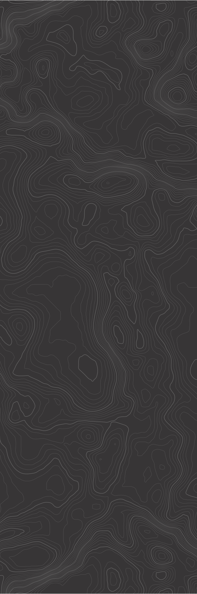

J
learn more about me
nice to meet you!
I’m currently a second year computer science student studying at the Rensselaer Polytechnic Institute. I have a strong passion for web development and have honed my skills in UI/UX design, frontend, and backend development. Specifically, I’m experienced with HTML, CSS, AJAX (js fetch), JavaScript, C++, Python (Flask), and Figma.
What excites me the most about web development is the opportunity to create intuitive and impactful user experiences. Below, you'll find a showcase of my work experience and projects. Feel free to check them out or reach out if you'd like to collaborate!
projects
pinkpulse
PinkPulse is a data visualization tool developed to analyze and represent trends in period poverty through an intersectional lens, utilizing data from the US Census API. The application focuses on examining statistics such as income level, racial distribution, and total money spent on period products across counties in California.
The mission of PinkPulse is to elevate awareness and stimulate informed dialogues around period poverty by delivering comprehensive and intersectional insights. By uncovering and highlighting the disparities and trends prevalent in California, PinkPulse aspires to inspire meaningful action and advocate for equitable and impactful solutions to combat period poverty.